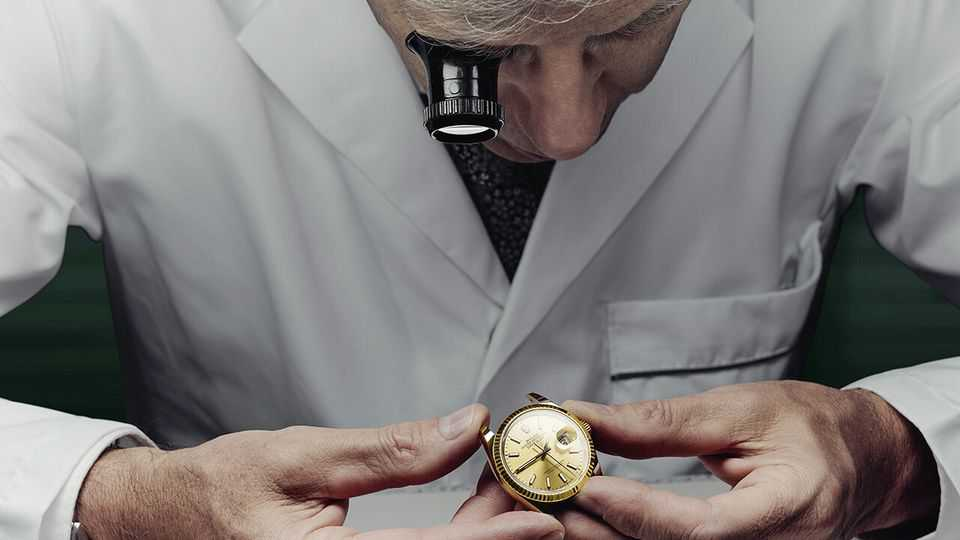
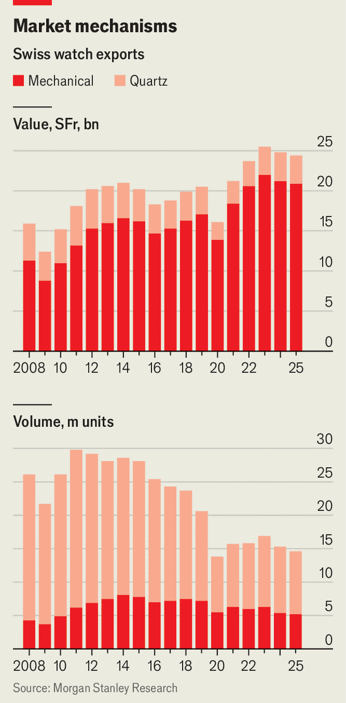

The Swiss watch industry is shrinking—but getting swankier
Brands such as Rolex and Patek Philippe are consolidating the market

Oct 1st 2026
BuyING a Rolex is an odd experience. Choose nearly any model on display at one of the Swiss watchmaker’s authorised dealers and you will be told that, unfortunately, it is unavailable at this time. Should you still wish to part with SFr14,000 ($16,800)—the average retail price of a Rolex—you will have to join a waiting list.
Thousands do so every day. Rolex sold almost 1.2m watches last year, bringing in revenue of more than SFr11bn, up from around SFr8bn in the early 2020s, thanks to higher prices (volume barely increased). For much of the Swiss watch industry, the clock is ticking. Over the past decade the volume of exports (which make up 95% of sales) has fallen by half (see chart). Sales of quartz timepieces, which use electronic rather than mechanical movements, have been hit particularly hard by the rise of smart watches, most of which are made in Asia. But for Rolex and a few other luxury watchmakers, times are better than ever.

Even as the volume of exports has tumbled, their value has continued to rise. In August it was 9.1% higher than a year earlier, the fourth year-on-year rise in as many months. Switzerland is home to around 450 brands. But last year just five of the poshest—Rolex, Cartier, Patek Philippe, Omega and Audemars Piguet—captured 60% of revenue. All bar Omega have been gaining share. The very top end has been especially strong. In 2025 watches costing more than SFr50,000 accounted for 37% of the value of Swiss watch exports, up from 33.5% in 2024. That partly reflects rising precious-metals prices, but also the rude financial health of the very rich and their demand for something special.
“The pandemic and the subsequent years have made the industry more adventurous,” says Ben Küffer, chief executive of Norqain, a Swiss family-owned firm whose watches sell for an average of SFr4,500. Many brands invested in new materials and more sophisticated movements to differentiate themselves. In the casing of its Wild One Meteorite Special Edition, a luxury sports watch, Norqain used a high-performance carbon-fibre composite; the dial was cut from an iron meteorite from Sweden. The firm made only 300 of them.
The upmarket switch has not been good for Swatch, the largest listed Swiss watchmaker. Swatch is credited with saving the industry in the 1980s, when its snazzy plastic quartz watches held their own against cheap Asian alternatives. These days it is struggling. It largely missed the “premiumisation” wave, says Jean-Philippe Bertschy of Vontobel, a bank (Swatch owns Omega and other fancy brands, but their results have been mixed). Its share price is more than 40% lower than it was in early 2023, and nearly 70% below its peak in late 2013. Last year its net profit plunged by almost 90%. Its maintains a bloated production infrastructure. Swatch once made up to 15m watches a year in 150 Swiss factories. It now makes just 4m, but has not closed any of those sites.
In May a collaboration with 151-year-old Audemars Piguet gave Swatch a boost. When the pair launched Royal Pop, a plastic pocket watch with the look of Royal Oak, an Audemars Piguet classic, buyers all over the world queued for hours. (A similar Swatch-Omega fusion in 2022 had pushed the group back into profit after the pandemic.) The buzz lifted sales in the first half of 2025, but net profit was still down on a year earlier.
Cartier apart, all the dominant group of luxury brands are privately owned, often by founding families such as the Audemars and Piguet clans. Most of them are at least 100 years old, but even newcomers can benefit from the premiumisation trend. Norqain was founded only in 2018 but already sells up to 10,000 watches a year.
Rolex remains king of the ring. Its sales are three times those of second-ranked Cartier. It is owned by the Hans Wilsdorf Foundation, a charitable trust set up in 1945 by the firm’s childless founder, which channels profits back into research and development and supports philanthropic causes in the canton of Geneva. Rolex says the scarcity of its wares is not deliberate policy, but the result of its focus on craftsmanship. It is time that is scarce. ■